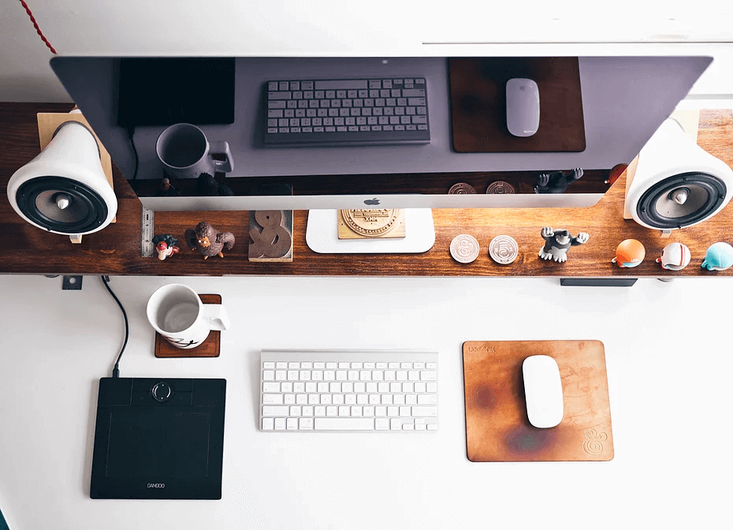

Welcome to LibsensorPy!
May 8, 2016 | Júnior Mascarenhas
LibsensorPy is an extensible open source python library, which allows the user to interact with environment through sensors and actuators coupled to the Raspberry Pi as well as add new sensors/actuators and easy way to practice, thereby strengthening the use of free ha...
Inspiração e organização: como trabalhar melhor ao longo do dia
May 8, 2016 | Júnior Mascarenhas
Este é o seu post no blog. Os blogs são uma ótima maneira de criar uma conexão com seu público e mantê-lo interessado. São também uma excelente forma de você se posicionar como referência em sua área. Para editar seu conteúdo, basta clicar aqui para abrir o Blog Manage...
Sua dose diária de design
May 8, 2016 | Júnior Mascarenhas
Este é o seu post no blog. Os blogs são uma ótima maneira de criar uma conexão com seu público e mantê-lo interessado. São também uma excelente forma de você se posicionar como referência em sua área. Para editar seu conteúdo, basta clicar aqui para abrir o Blog Manage...